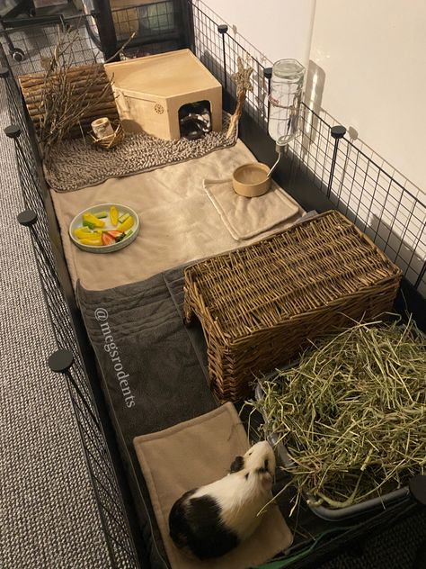
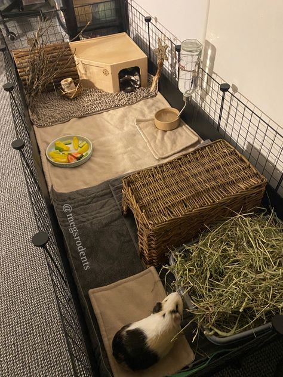

If there is anyone who likes to eat it is these small potatoes. I do not know how or why they act like they are starving all of the time but they will let out a whistle to let you know everytime you move a plastic bag from JC Pennys. Guinea pigs need a balanced diet of nutricious food--They are herbivores. Search up exactly what they can't have on google. They need hay 24/7 otherwise their teeth with grow. Think of the hay as their toothbrush. Pellets 1/3 amount for each piggy.
The bedding I reccomend are tagged below. A brand name "Guinea Dad" That website has every cage and liner for them. Guinea pigs poop for every one pellet they eat and I get tired of maintenence so having appropriate thick bedding is worth it. Also, every piggy needs a lot of space. a 56' by 24 should do the trick for two piggies. They can stay outdoors or indoors.
Below are some creative ideas on guinea pig cages. Whenever I clean my piggies cage or put new toys in there they do a "popcorn" dance. It is the cutet thing in the world to watch them do because you know they are happy. Here are some popcorn dance worthy cage ideas!
 


 Cage Liners
Cage Liners
It is very important to know the types of guinea pig noises so that you can understand what the piggies want in life. I have only heard my piggy screetch once when her nail was stuck in her bedding and she could not get out. Another time I was trimming my piggies nails on a high table and she jumped right off! I would say she knew how high it was but unfortunetly for her she was hungry. These noises give me and others cues to their guinea pigs needs and wants. The story I just told does not depict their intelligence in the right way but they are extremely intuitive.
Did you know that guinea pigs live betweeen 4-12 years?! They can tell when their owner is sad or happy and they react off of that
Did you know that Guinea pigs will dance if you sing to them? I love it when mine do that!
 MywebsitePg1.html
Page 3
MywebsitePg1.html
Page 3